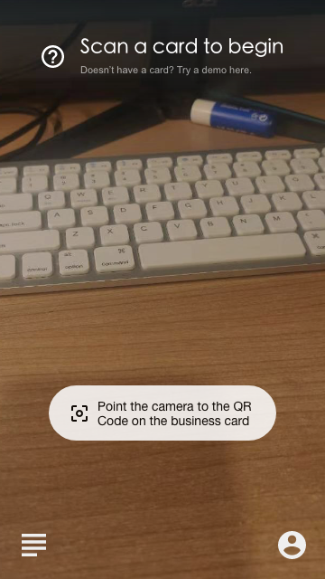
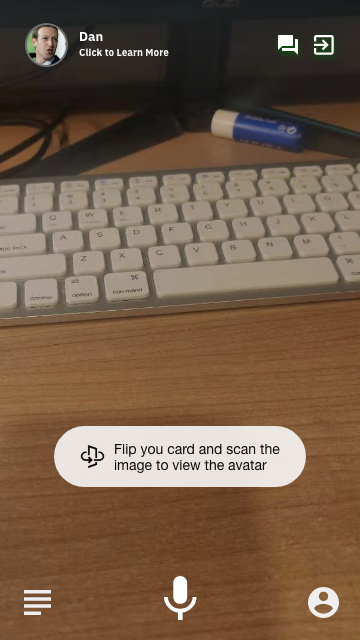
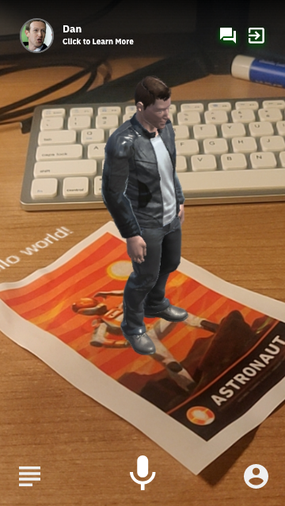
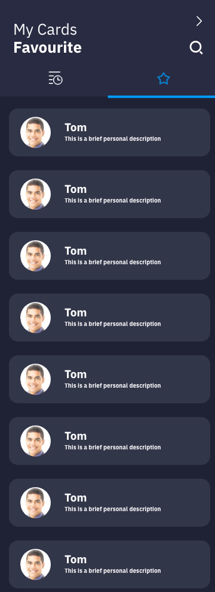
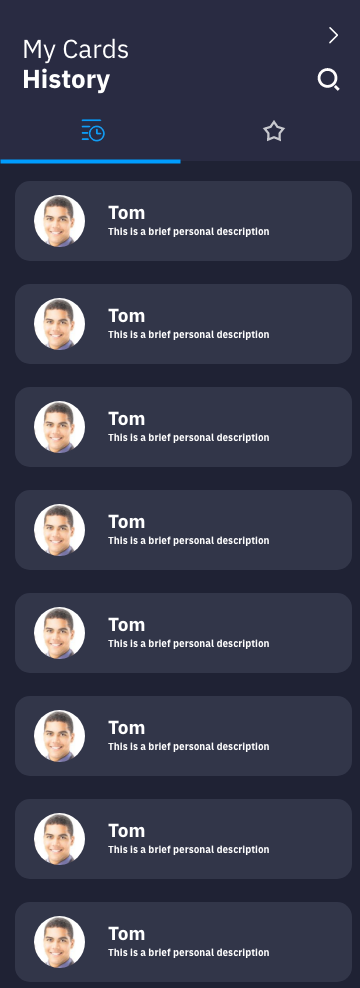
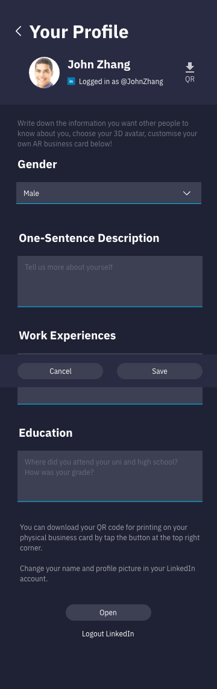

Hand-drawn sketches
 |
 |
 |
Considering our primary users and potential user, we design a simple and straightforward interface. Also, we choose blue hue in both application and website, it fit out theme Based on that, we use simple icons to represent the main features.
Users are always unsure whether their business card was recognized or is the system working. The progress indicator is essential. For instance, when the camera scans a card.
The new user may not know what they should do when they first use the application. Hence we design lots of indicators in the app. For example, when we open the app, the app will notice that'scan a card to begin' and 'point the camera to the QR code on the business card.' Also, when the user finishes scanning, the app will show 'flip your card and scan the image to view the avatar' to make sure the user can see the AR avatar.
All pages have clear icons and simple instructors to notice user where he/she are and what they can do.
we use a similar layout and the same hue on all pages. The menu and the icon we used to represent each feature is the same.
|
|
|
|  |  |  |
|  |  |  |